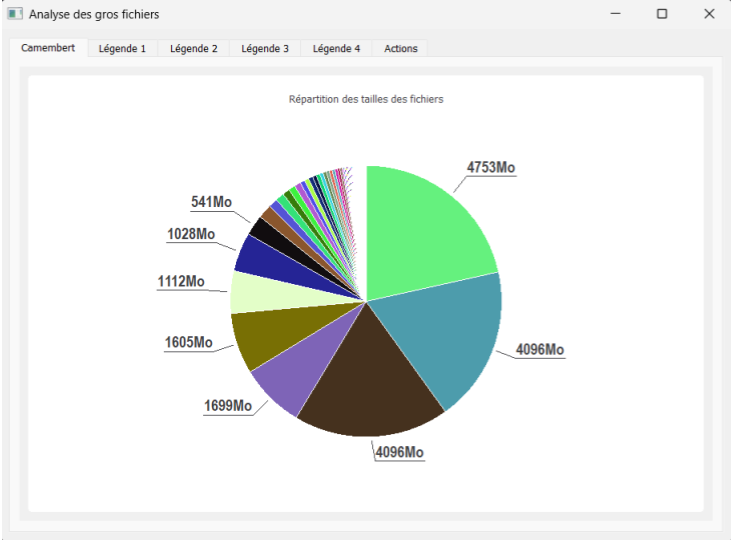
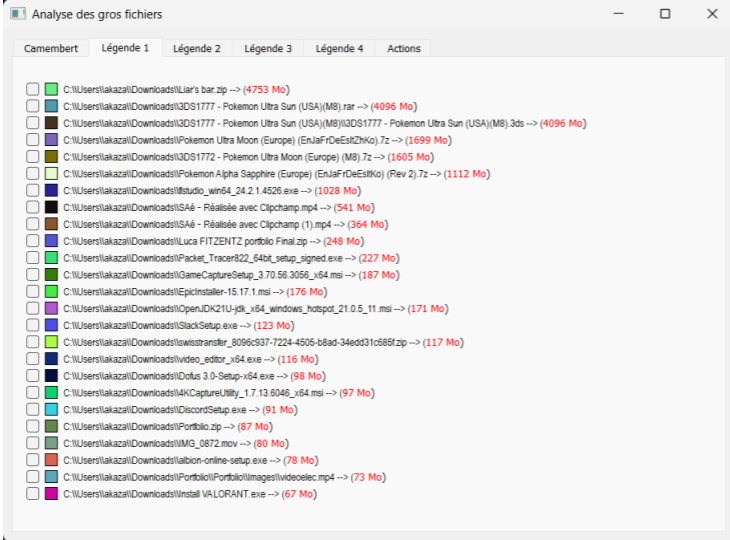
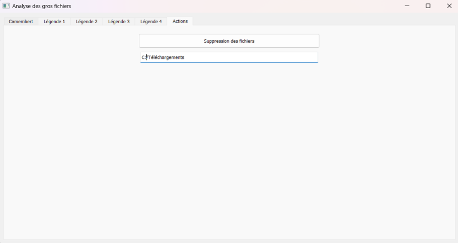

Fondement
L’objectif principal de ce projet était d’analyser et d’optimiser les performances d’un réseau WiFi au sein du bâtiment C. Nous avons mené un ensemble d’actions techniques allant du câblage physique jusqu’à la modélisation du réseau via le simulateur Cisco Packet Tracer.
Une attention particulière a été portée sur l’étude des réseaux WiFi en 2,4 GHz et 5 GHz, en analysant leur portée, leurs performances et leur efficacité dans différents environnements. Ces mesures ont permis de cartographier les zones de couverture optimales et de comprendre les limites techniques de chaque fréquence.
Technologies et matériel utilisés
- Python
- Bibliothèque Pathlib
- Interface graphique avec PyQt5
- Scripts d’automatisation avec PowerShell
- Visualisation des données avec PyQtChart
Répartition des rôles
Développement de l'outil
- Matthieu D.
- Akaza K.
Déroulement du projet
Le projet a débuté par la création d’un script Python développé par Arthur. Ce script scanne tous les fichiers d’un répertoire et permet de fixer un seuil de taille pour ne conserver que les fichiers volumineux.
En parallèle, nous avons développé une interface graphique avec PyQt5, rendant l’outil plus intuitif. Cette interface permet à l’utilisateur de sélectionner le dossier à analyser et d’afficher les résultats sous forme de liste ou de graphique circulaire.
Par la suite, un script PowerShell a été ajouté pour automatiser le lancement des scripts Python. Un second script PowerShell a été conçu pour permettre à l’utilisateur de confirmer la suppression des fichiers identifiés, assurant ainsi la sécurité des données.
Logiciel après analyse :
Liste des fichiers détectés :
Menu de suppression :
Contraintes et solutions
L’intégration du script PowerShell de suppression a posé plusieurs problèmes, notamment en raison des autorisations d’accès aux fichiers et des limites du système. Après plusieurs ajustements, nous avons pu automatiser cette partie tout en gardant un contrôle manuel par l’utilisateur.
Une autre difficulté est survenue lors de la suppression de fichier, supprimer un fichier ne fonctionnait avec les cases à cocher et ouvrait une page du gestionnaire de fichier permettant de faire une suppression.
Résultats
- Développement d’un outil complet d’analyse des fichiers volumineux
- Interface graphique fonctionnelle avec affichage des résultats
- Suppression des fichiers intégrée via un menu PowerShell sécurisé
Leçons tirées du projet
Ce projet m’a permis d’approfondir mes compétences en programmation Python et PowerShell, en structurant un outil modulaire et automatisé.
La création de l’interface graphique avec PyQt5 m’a appris à rendre un programme plus accessible à l’utilisateur, tout en gérant l’affichage dynamique des résultats à l’aide de graphiques.
J’ai aussi découvert l’importance d’une bonne gestion des fichiers dans un environnement multi-plateforme (Windows, Linux, MacOS) et l’intérêt d’utiliser le format JSON pour stocker temporairement les données à analyser.
Enfin, ce projet m’a sensibilisé aux défis de l’ergonomie, de la pagination et de la sécurité lors de la manipulation de fichiers utilisateurs.